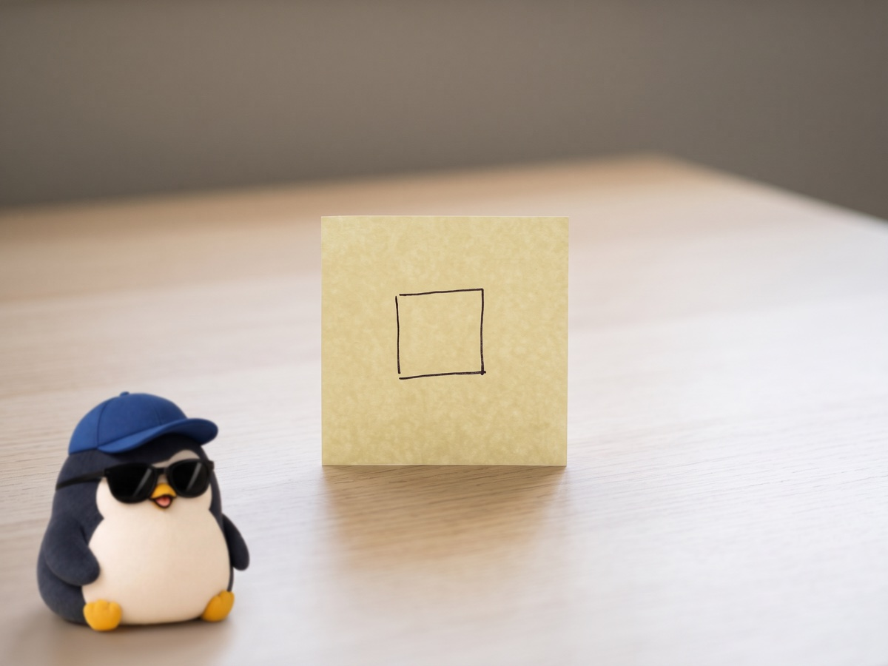

Live small. One goal a day is enough 🌱

Lately, I set too many goals.
The moment I am setting goals is very fun.
But the sizes of the goals are all different, and every day something stays unfinished.
If I compare it to something, it feels like my whole life always has a debt of about minus 10,000 dollars.
From the moment I wake up in the morning, I go, "Ugh."
I end up thinking, "I am not enough again today."
I only look at the parts that are missing, and I feel that I am not doing anything properly.
You may think, "If there are too many things to do, you can just throw them all away."
But I do not feel that way at all.
Even the things I think I "have to do" are, when I think about them deeply, all things I want to do.
I was just changing them into "have to" by myself.
I have heard a story that smarter people set small goals and get small wins one after another.
So, I will go with this for a while.
One goal a day.
If I do it, that day gets 100 points.
Everything else is a bonus.
I do not need to try to live big.
I am telling myself, "Live small." 🌱
When this feeling clears up, I will write here again about how it cleared up.